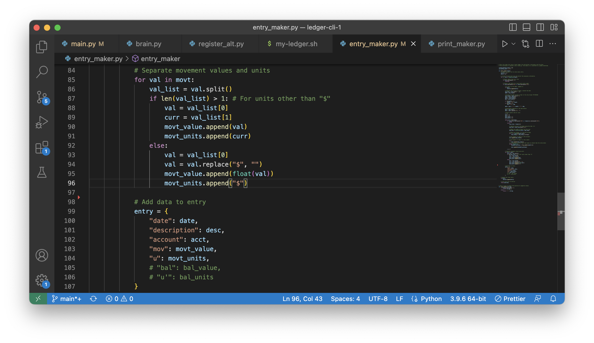
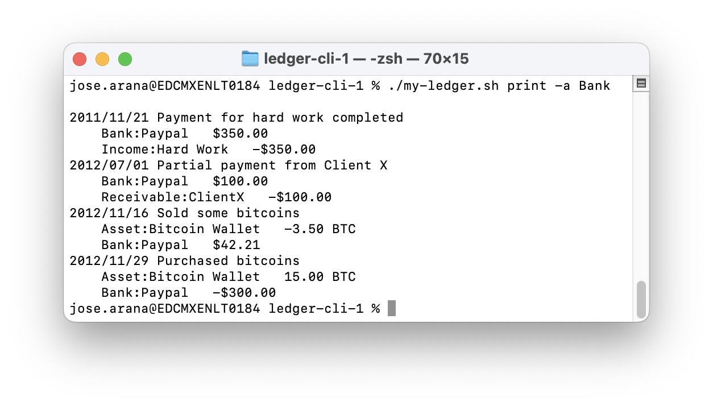
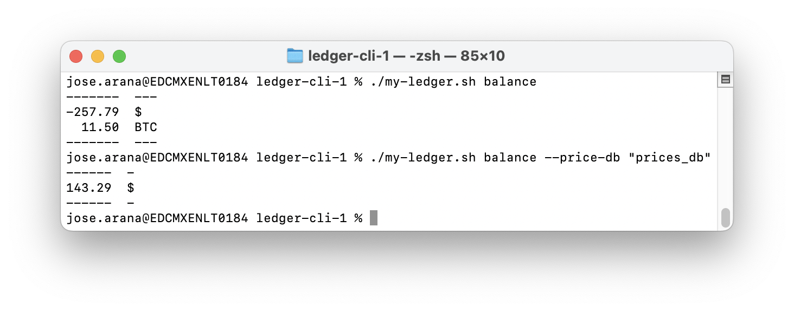

Week 04: A Breakable Toy Experiment
(Apr 25 - May 9) Individual console line application
After delivering the team coding assignments we were given a new task, we now had to recreate Ledger a CLI application for accounting. The real Ledger is a very powerful and complete tool, however, so in order to keep things reasonable we only had to implement three commands and three flags. The commands given were register, balance, and print. while the flags to implement were --sort, --file, and --price-db.
Command: register
The command register outputs a list of all the transactions, formatted like a double entry accounting book. Going left to right we have a date for the transaction, the accounts involved, the value traded in the transaction and finally a running balance, which is independent for each currency or symbol used.

In order to output the data in this format the code must read through every filename specified in "index.ledger". Then parse every entry contained in the files and append them to a dictionary. The dictionary is formatted like a JSON so that it can be read by the python library Pandas and turned into a dataframe. This was done to facilitate the task of formatting the output, filtering and sorting.
By using the optional flag --account the table can be narrowed down to only the transactions where the account specified was involved. The choice was made to implement this functionality as a flag instead of a positional attribute of register because that was simpler to implement using the argparse library.

Command: balance
The command balance outputs the total balance of all accounts. Because in the register command we already have a running balance column, we could reuse most of the code for register by moving it to its own function. Then we simply use pandas to colapse the running balance column, so we only keep the last value on it.

Like register this command could also make use of the account flag to only show the total of the transactions involving that account.

Command: print
The command print was to me the simplest one, as it only needs to read through the ledger data and prints it out in an homogenized format. I reused most of the code from the previous two commands. As with both previous commands, print can make use of the account flag to select which accounts to actually show.
Flag: --prices-db
The --prices-db flag does two things: It tells ledger that you want the output to show in a single currency, and in the specified file it lets you define what currency to output and what the exchange rate will be. Out of the optional flags this was the most involved one, so much that the code was split off for the register command, there is one version for its normal functioning and another for when this command is called.

Compare the output when the function is not called and when it is:

Flag: --file
The --file flag specifies what file should be used as the index, the index.ledger text file contains the filenames of all entries for ledger. Being that ledger is originally an accounting tool, this could be considered a useful functionality to change between clients, for example. In the case of our implementation though we always default back to "index.ledger" when executing the code again. The implementation of this flag was very simple, we converted all references to index.ledger to variables and used an if statement to check if the flag was being passed as an argument.

Flag: --sort
The --sort flag is used to sort the output, the real Ledger can take any EXPR as an argument, in our case we have only included "date" and variations as valid arguments.

Conclusion
Ledger is one of the most complex programs that I've built on my own, if not the most complex. There was a moment when I felt like the complexity was too much to handle by myself. But as I powered through I found it really rewarding and by splitting my functions over many files I found it easier to keep track of everything.
I made many mistakes while building Ledger, I should've read more carefully what each function was supposed to do, as I found myself having to go back to tweak the code many times. However I don't regret starting to code without having the full picture, there was nothing i wrote that didn't come useful later, and I hold the belief that getting started is usually the most difficult part of any project.
Uploaded on May 9, 2023